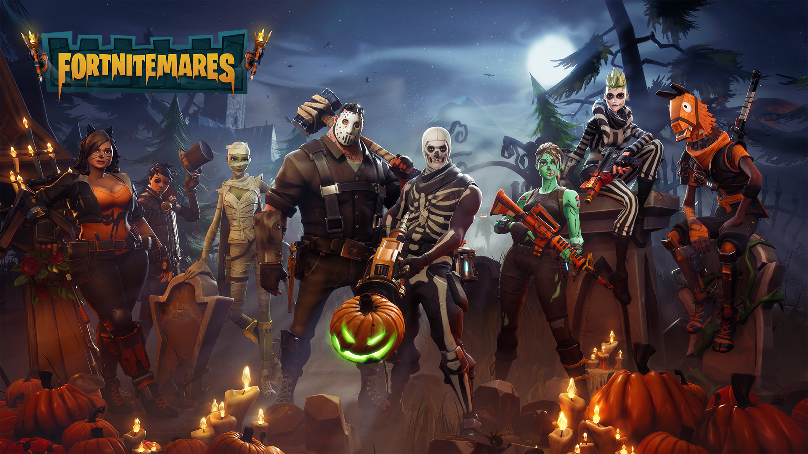

Er is een storm in het land en die maakt je een zombie.
De storm kwam onverwachts en jij overleeft met 3 andere personen en je moet proberen de wereld te redden.
Alle mensen zijn zombies geworden en je moet bepaalden machines activeren om de 'zombies'tegen te houden.
Ik ga ook een beetje vertellen over waarom IK de game leuk vind.
De game is leuk omdat je natuurlijk voor zombies jou bv.Data of ATLAS moet beschermen met je teammates (3 anderen) ga je een hele grote basis bouwen met traps en buildings.
Je kan traden voor beteren weapons en zo.
